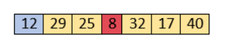

Selection sort complexity
Now, let's see the time complexity of selection sort in best case, average case, and in worst case. We will also see the space complexity of the selection sort.
1. Time Complexity
Average Case :- O(n2)
Worst Case :- O(n2)
Now, let's see the working of the Selection sort Algorithm.
To understand the working of the Selection sort algorithm,
let's take an unsorted array. It will be easier to understand the Selection sort via an example.
Let the elements of array are -
Now, for the first position in the sorted array, the entire array is to be scanned sequentially.
At present, 12 is stored at the first position, after searching the entire array, it is found that 8 is the smallest value.

So, swap 12 with 8. After the first iteration, 8 will appear at the first position in the sorted array.
For the second position, where 29 is stored presently, we again sequentially scan the rest of the items of unsorted array.
After scanning, we find that 12 is the second lowest element in the array that should be appeared at second position.
Now, swap 29 with 12. After the second iteration, 12 will appear at the second position in the sorted array.
So, after two iterations, the two smallest values are placed at the beginning in a sorted way.
The same process is applied to the rest of the array elements. Now, we are showing a pictorial representation of the entire sorting process.
array of found values in sorted order.
Now, the array is completely sorted.
Start Visualizer